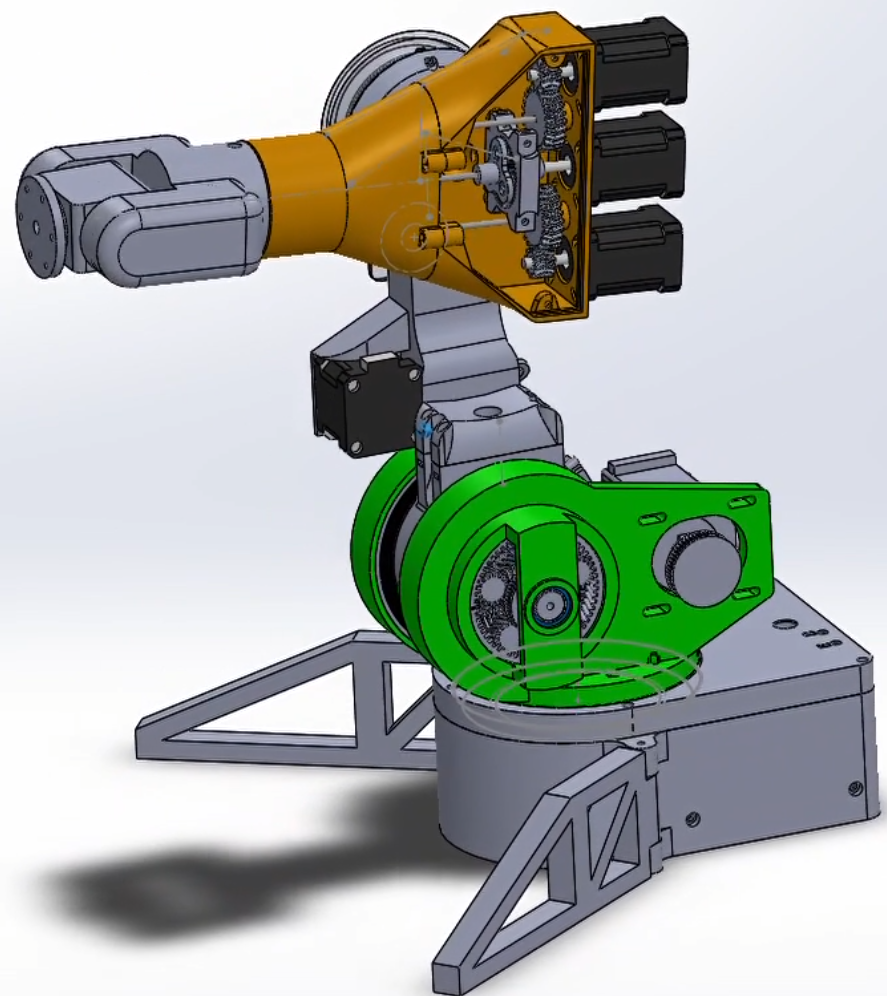
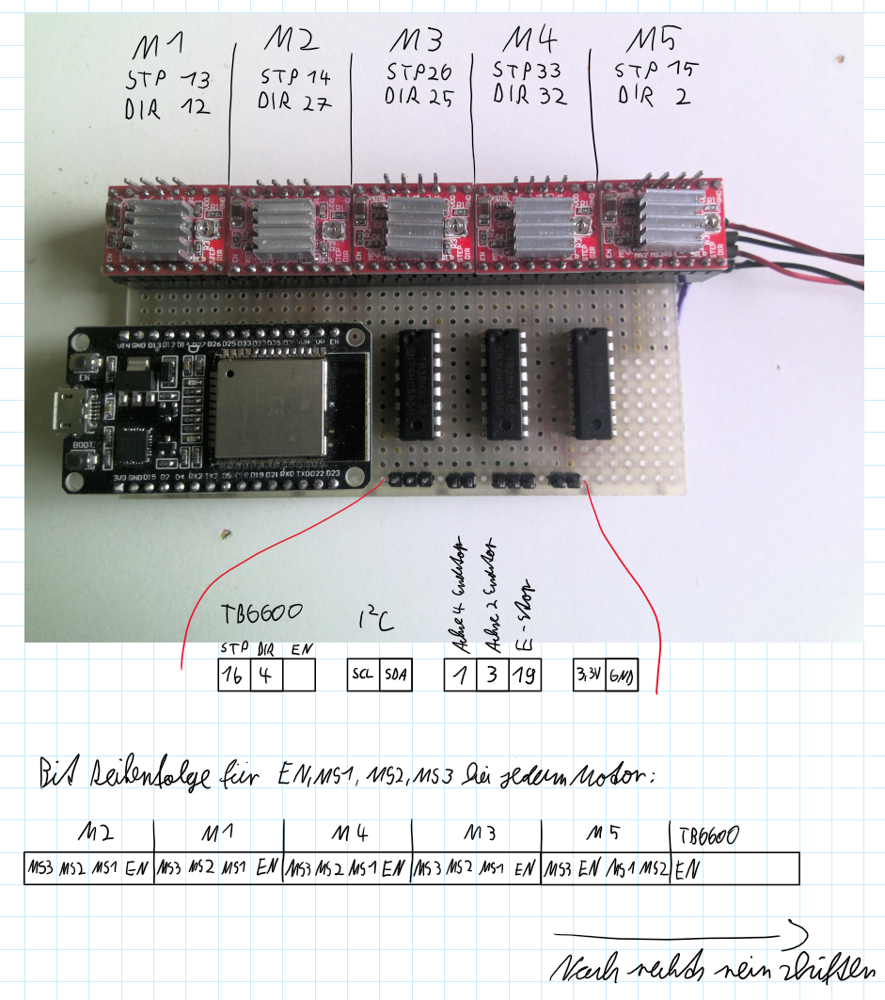

Brobot — Custom 6-DoF Robot Arm
Designed and built a complete 6-DoF robot arm from scratch. Developed the mechanical structure in CAD, produced parts by 3D printing, designed the electronics architecture, and implemented a custom C++ controller on ESP32. Implemented forward/inverse kinematics, coordinated axis motion, Jacobian-based Cartesian jogging, and safety logic.
Private project- C++
- ESP32
- Forward/Inverse Kinematics
- Stepper Control
- Jacobian Control
- CAD
- 3D Printing

